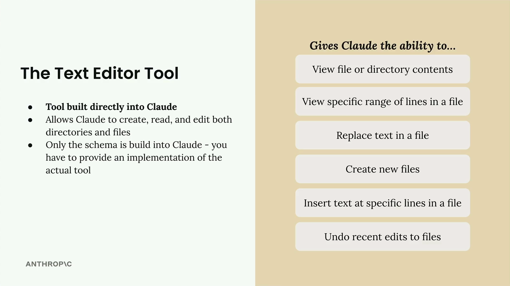
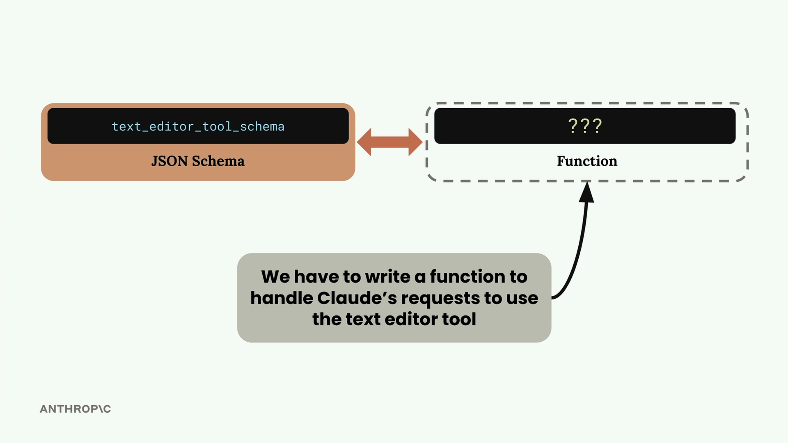
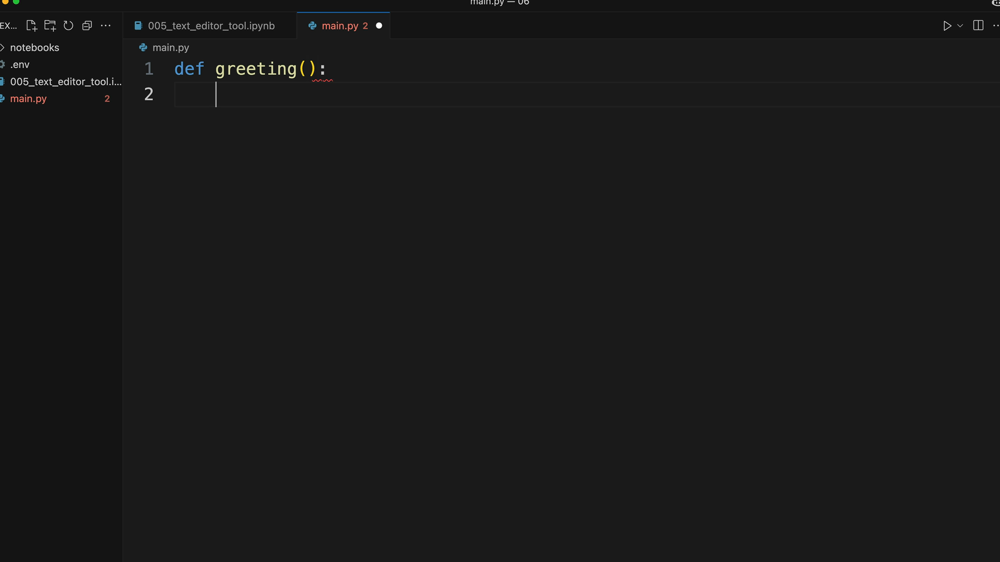

Текстовый редактор
Чему научитесь
Видео 8:41 и текст урока
К концу урока вы сможете:
- перечислить, что умеет инструмент текстового редактора;
- объяснить, почему схему знает Claude, а реализацию пишете вы;
- подключить инструмент нужной версии под свою модель.
Видео и текст урока.
Смотреть урок на Skilljar The text edit tool · 8:41Важно: строки версий инструмента для всех моделей можно найти здесь: https://docs.anthropic.com/en/docs/agents-and-tools/tool-use/text-editor-tool
У Claude есть один встроенный инструмент, который не нужно создавать с нуля, — текстовый редактор (text editor tool). Он позволяет Claude работать с файлами и папками так же, как вы работаете в обычном текстовом редакторе.
Что умеет текстовый редактор
Инструмент даёт Claude широкий набор операций с файлами:
- просматривать содержимое файла или папки;
- просматривать определённый диапазон строк файла;
- заменять текст в файле;
- создавать новые файлы;
- вставлять текст в определённую строку файла;
- отменять последние правки файлов.

Это заметно расширяет возможности Claude и по сути сразу позволяет ему работать как программист.
Что нужно реализовать
Здесь легко запутаться: схема инструмента встроена в Claude, но саму реализацию всё равно пишете вы. Думайте об этом так: Claude знает, как попросить операцию с файлом, а код, который её выполняет, пишете вы.

С другими инструментами вы пишете и JSON-схему, и реализацию функции. С текстовым редактором схему знает Claude, а вы должны написать функции, которые обрабатывают его запросы: создать файл, прочитать папку, заменить текст и так далее.
Версии схемы
Хотя основная схема встроена в Claude, в запросе всё равно нужно передать небольшую «заглушку» схемы. Какая именно — зависит от модели Claude:
def get_text_edit_schema(model):
if model.startswith("claude-3-7-sonnet"):
return {
"type": "text_editor_20250124",
"name": "str_replace_editor",
}
elif model.startswith("claude-3-5-sonnet"):
return {
"type": "text_editor_20241022",
"name": "str_replace_editor",
}

main.py для примера: в нём только заголовок функции def greeting.Claude видит эту маленькую схему и автоматически разворачивает её в полное описание инструмента текстового редактора.
Практический пример
Посмотрим текстовый редактор в действии. Когда вы просите Claude поработать с файлами, он использует инструмент, чтобы читать, менять и создавать файлы.
Например, если попросить «Open the ./main.py file and summarize its contents», Claude:
- откроет файл через текстовый редактор;
- прочитает содержимое;
- даст краткое описание.
Можно пойти дальше и попросить изменить файлы. Например: «Open the ./main.py file and write out a function to calculate pi to the 5th digit. Then create a ./test.py file to test your implementation.»
Claude:
- просмотрит текущий
main.py; - заменит его содержимое новой реализацией с функцией вычисления числа пи;
- создаст новый файл
test.pyс подходящими юнит-тестами.
Зачем нужен текстовый редактор
Можно спросить, зачем этот инструмент, если в современных редакторах кода уже есть ИИ-ассистенты. Текстовый редактор полезен, когда:
- вы строите приложения, которым нужно программно редактировать файлы;
- вы работаете в среде без полноценного редактора кода;
- вы хотите встроить редактирование файлов прямо в своё приложение на Claude.
По сути, текстовый редактор позволяет повторить бо́льшую часть возможностей «умного» ИИ-редактора кода внутри вашего приложения — с полным контролем над тем, как Claude работает с файловой системой.
Дальше
Последний урок блока — веб-поиск: встроенный инструмент, который Anthropic выполняет сам.
Оригинал урока: The text edit tool.